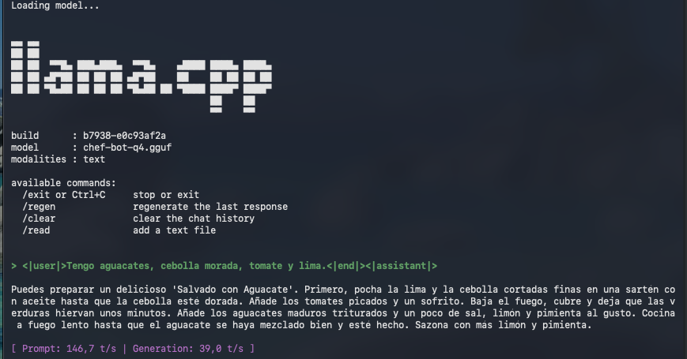

Como estamos en un Mac, nos olvidamos de las librerías estándar de NVIDIA. Aquí mandan MLX y Metal. Primero creamos un entorno limpio para no romper nada y compilamos el motor desde cero.
No podemos soltar al bot sin darle un libro de cocina. He estructurado los datos en formato JSONL, usando las etiquetas de 'Phi-3' para que el modelo sepa cuándo hablo yo y cuándo le toca responder a él.
En lugar de reentrenar todo el modelo (que nos llevaría siglos), usamos LoRA. Es como ponerle un "parche de conocimiento" específico de cocina sobre su cerebro de propósito general.
Resultado: Los adaptadores ya están listos en la carpeta ./adapters. Ya sabe freír un huevo.
Ahora toca unirlo todo. Cogemos el modelo base, le pegamos lo aprendido y lo comprimimos a q4_k_m. ¿Por qué? Para que vuele sin gastar toda la RAM del Mac.
• El lío de versiones: Torch se puso caprichoso con la versión Nightly.
Volví a la versión estable y usé MLX-LM para gestionar la memoria.• El Makefile fantasma: Intenté usar el Makefile antiguo y falló.
Cambié a CMake; mucho más moderno y menos problemas de rutas.• Rutas perdidas: El script no encontraba los adaptadores.
Un simple "mv" para ponerlos en la raíz y todo arreglado.Inferencia lograda a 39 tokens por segundo (¡va como un tiro!).
Aunque bueno, el bot me ha sugerido un "Salvado con Aguacate"... todavía alucina un poco, pero tiene buena pinta.
